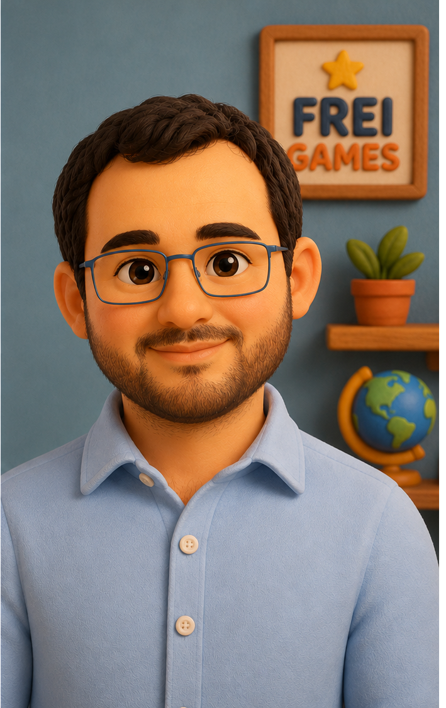
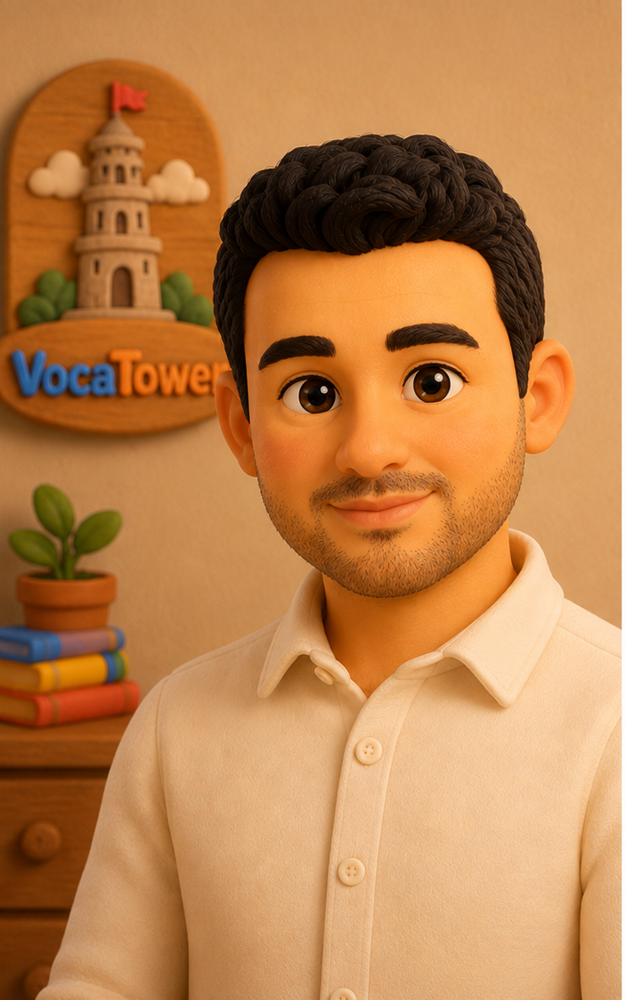

Oyun Önce Gelir
Oyuncu önce gerçek bir oyun deneyimi yaşamalı. Öğrenme, eğlenceli oynanışın doğal sonucu olmalı.
Oyun yapıyoruz. Ama önce öğrenmeyi eğlenceli hale getiriyoruz.
Biz Frei Games’iz. Çocukların ve öğrenmek isteyen herkesin severek oynayabileceği eğitim oyunları geliştiriyoruz.
Bizce öğrenmek yalnızca kitapların arasında veya sınıf ortamında gerçekleşmek zorunda değil. Doğru tasarlanmış bir oyun, öğrenmeyi doğal, kalıcı ve keyifli bir deneyime dönüştürebilir.
VocaTower tam da bu düşünceden doğdu.
İngilizce öğrenmeye çalışan birçok kişi kelimeleri ezberliyor, kısa süre sonra unutuyor ve kullandığı öğrenme uygulamalarından zamanla uzaklaşıyor.
Biz bu durumu değiştirmek istedik.
İngilizce öğrenmek, ders çalışmak yerine gerçekten eğlenceli bir oyunun doğal bir parçası olsaydı ne olurdu?
VocaTower’ı geliştirirken çıkış noktamız tam olarak buydu.
VocaTower’da oyunculara sürekli çalışmaları gerektiğini hatırlatmak istemiyoruz.
Onların yeni seviyeler açmasını, ödüller kazanmasını, başarımlar elde etmesini, farklı oyun deneyimlerini keşfetmesini ve ilerleme hissini yaşamasını istiyoruz.
İngilizce öğrenmek ise bütün bu deneyimin doğal bir parçası haline geliyor.
Çünkü bizce en güçlü öğrenme, oyuncunun eğlenirken gerçekleştirdiği öğrenmedir.
Oyuncu önce gerçek bir oyun deneyimi yaşamalı. Öğrenme, eğlenceli oynanışın doğal sonucu olmalı.
Her deneyim güvenli, pozitif, anlaşılır, cesaretlendirici ve baskı oluşturmayan bir yapıda tasarlanmalı.
Hızlıca çok özellik eklemek yerine, daha az sayıda özelliği yüksek kaliteyle geliştirmeyi tercih ediyoruz.
Oyuncular hiçbir zaman para ödeyerek öğrenme avantajı veya oyun ilerlemesi satın alamaz. Gelecekte sunulabilecek ücretli içerikler yalnızca kozmetik veya isteğe bağlı kolaylıklar olabilir.
VocaTower, Frei Games’in geliştirdiği ilk oyundur.
Hedefimiz yalnızca bir İngilizce kelime oyunu geliştirmek değil. Uzun vadede matematikten hafızaya, coğrafyadan hikâye anlatımına kadar farklı alanlarda, aynı kalite anlayışıyla eğitim oyunları geliştirmeyi amaçlıyoruz.
Her yeni üründe aynı soruyu sormaya devam edeceğiz:
“Bunu oynayan biri gerçekten eğleniyor mu?”
Çünkü oyun eğlenceliyse öğrenme de doğal olarak onun bir parçası olabilir.

VocaTower’ın kurucusu ve ana geliştiricisidir.
Oyunun fikir aşamasından yazılımına, oyun tasarımından kullanıcı deneyimine kadar projenin her aşamasında aktif olarak çalışmaktadır.
Amacı, çocukların ve İngilizce öğrenmek isteyen herkesin keyifle oynayabileceği kaliteli eğitim oyunları geliştirmektir.

VocaTower’ın iş geliştirme süreçlerinde görev almaktadır.
Pazar araştırmaları, ürün konumlandırması, satış stratejileri ve büyüme planlamaları üzerinde çalışarak VocaTower’ın daha fazla oyuncuya ulaşmasına katkı sağlamaktadır.
Yiğit Efe, VocaTower’ın en önemli ekip üyelerinden ve ilk oyuncularından biridir.
10 yaşındaki bir oyuncu olarak yeni özellikleri ve oyun modlarını doğrudan hedef yaş grubunun gözünden test eder. Eğlenceli, zorlayıcı, anlaşılması güç veya geliştirilmesi gereken noktaları açık ve doğal geri bildirimlerle paylaşır.
VocaTower’ın çocuklara gerçekten hitap etmesini önemsiyoruz. Bu nedenle hedef yaş grubundaki bir oyuncunun görüşleri, geliştirme sürecimizin önemli bir parçasıdır.
VocaTower sürekli gelişen bir proje.
Oyuncularımızdan gelen geri bildirimleri dikkatle inceliyor, oyunu her gün biraz daha iyi hale getirmek için çalışıyoruz.
VocaTower, büyük bir şirket tarafından değil; oyun yapmayı ve öğrenmeyi seven küçük ama tutkulu bir ekip tarafından geliştiriliyor.
Her yeni özellik gerçek oyuncu geri bildirimleriyle şekilleniyor.
Bu yolculukta bizimle olduğunuz için teşekkür ederiz.
Sorularınız ve geri bildirimleriniz için bize ulaşabilirsiniz.
support@vocatower.com